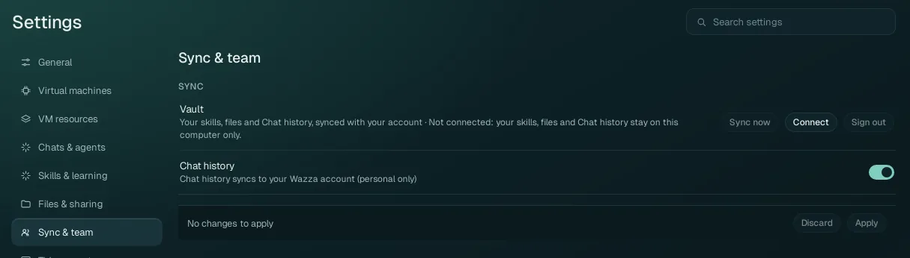

Settings › Sync & team
Sync your skills, files and Chat history with your Wazza OS account (the vault), and, with a team account, your team's settings and what your team can see.
Sync#

| Control | What it does |
|---|---|
| Vault · Connect | Connects this computer to your account's vault: the website's sign-in opens in Wazza OS's private sign-in tab, where you approve this computer. Then your skills, files and Chat history sync with your account. The line next to Vault says the state (not connected, syncing, up to date…). |
| Sync now | Syncs at once instead of waiting for the next automatic sync. |
| Sign out | Signs the vault out on this computer. What the vault does not hold yet is kept here, nothing is deleted. |
| Chat history (default: on) | Your Chats sync to your account (personal only: never shared with a team unless you share one yourself). Off: Chats stay on this computer. |
| Held-back deletes · Confirm deletes | Shown only when needed. When many files were deleted on this computer at once, the sync holds those deletes back instead of deleting them in your vault too (a brake against accidents). Confirm deletes sends them: what was deleted here is deleted in your vault too. |
| Unsent team changes · Restore | Shown only when needed: changes you made to team files that never reached the vault. Restore puts them back in your own files, in a folder named Unsent team changes, so nothing is lost. |
Sync needs a Wazza OS account: Home › Sign in.
Team#
This section shows only on a team account (an organisation on the Wazza website). What you see depends on your role:
| Part | Who sees it | What it is |
|---|---|---|
| Team | Every member | Which organisation you belong to and your role, the organisation's policy (an owner or admin edits it, a member reads it), and a Private session switch when the policy allows private sessions. |
| Activity | Off unless the policy turns it on | An admin sees each member's daily totals: active and idle time, and how many keyboard and mouse inputs, never what was typed, clicked or shown, and no hourly detail. A member sees Your team can see your active time and their own daily totals. |
| Shared sessions | Admins | The Chats members chose to share with the team (each Chat's Share this Chat with my team), with a viewer that replays one message by message. |
Team files are kept in the team's vault, which every member of the team can read: activity totals and shared Chats included. The words in the app say so ("Your team can see…").
The company file servers of a team are in Files & sharing › Company folders.